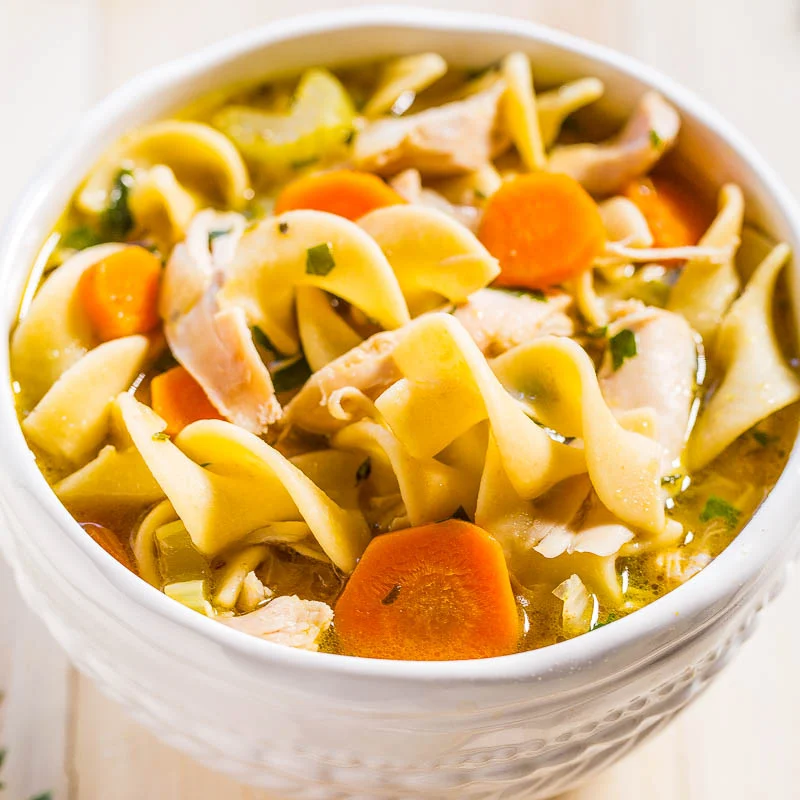

Chicken Noodle Soup

Description
Chicken noodle soup is simple and nourishing.
This is great to cook when you're sick.
Ingredients
- 1 lb cooked chopped chicken breast
- 1 bag egg noodles
- 3 cartons chicken broth
- 3 large chopped carrots
- 3 large chopped celery ribs
- 1 medium chopped onion
- Thyme, salt, pepper, rosemary to taste
Steps
- Boil chiken broth in a large pot
- Add egg noodles, seasonings, and veggies, boil on medium for 15 minutes
- Add chicken and season to taste
- Serve warm